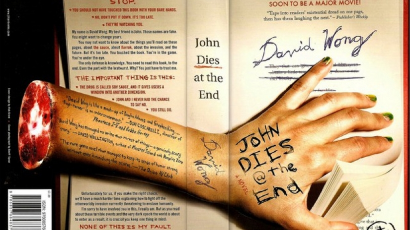

Info
John Dies at the End
From day one it was like society was this violent, complicated dance and everybody had taken lessons but me. Knocked to the floor again, climbing to my feet each time, bloody and humiliated. Always met with disapproving faces, waiting for me to leave so I'd stop fucking up the party. They wanted to push me outside, where the freaks huddled in the cold. Out there with the misfits, the broken, the glazed-eye types who can only watch as the normals enjoy their shiny new cars and careers and marriages and vacations with the kids. The freaks spend their lives shambling around, wondering how they got left out, mumbling about conspiracy theories and bigfoot sightings. Their encounters with the world are marked by awkward conversations and stifled laughter, hidden smirks and rolled eyes. And worst of all, pity.